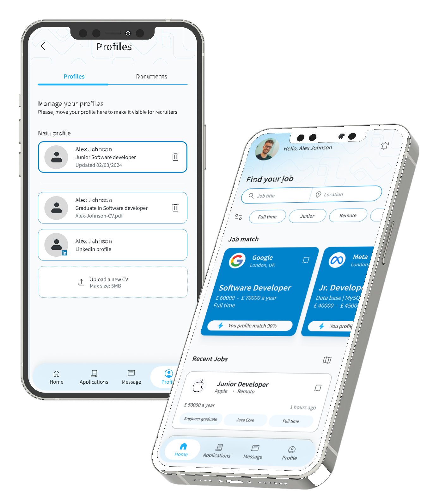
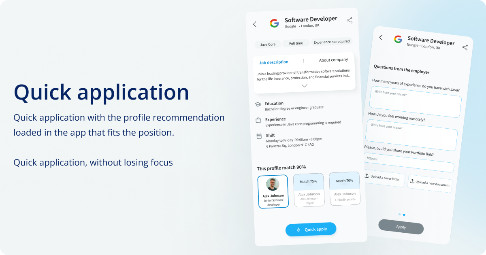

Redesigning job search for the 43% of people who apply across two or more industries — but have only ever been offered one career identity.

JobLink is a mobile concept that rethinks how people manage multiple career identities when searching for jobs. Most platforms assume users have one professional identity — but many professionals today work across different industries or roles.
Designers who also freelance as marketers, engineers transitioning into product roles, career changers — they all struggle to represent themselves with a single profile. 43% of job seekers apply across 2+ industries, yet every major platform treats them as a single-track professional.
I ran the full process end-to-end: user research, competitive analysis, card sorting, information architecture, wireframing, usability testing, A/B testing and high-fidelity iOS UI design.
Most job platforms are built around the idea that users have one professional identity. These users face a specific set of compounding problems — not just one.
- Creating multiple accounts (against platform policies)
- Rewriting profiles manually for every industry
- One-size-fits-all CV that stands out nowhere
- 15+ hours/week lost to application customisation
- Abandoning qualified roles — too much friction
- Multi-skilled professionals are systematically underrepresented
- Passive job seekers give up before they even start
- Platforms lose high-value users due to process friction
- Qualified candidates miss roles in their secondary industries
- Application fatigue becomes the norm, not the exception
Help professionals manage multiple career identities and apply to different roles — without constantly rewriting their profile from scratch?
To understand the challenges job seekers face when applying across different roles, I conducted user surveys and analysed existing job platforms. The goal was to identify key behaviours, pain points and opportunities that could inform the product strategy.
User surveys revealed several common behaviours and frustrations — the data confirmed the problem was systemic, not individual.
I analysed the major job platforms to understand their strengths and, more importantly, where they fall short. Each gap became a direct opportunity for JobLink.
| Feature | Indeed | TotalJobs | JobLink | |
|---|---|---|---|---|
| Multiple career profiles | ✕ | ✕ | ✕ | ✓ |
| Location-based map search | ~ | ✕ | ✕ | ✓ |
| Application tracker | ~ | ✕ | ~ | ✓ |
| Quick / one-tap apply | ~ | ✕ | ~ | ✓ |
| Profile switching | ✕ | ✕ | ✕ | ✓ |
| Usability rating (tested) | 67% | 71% | — | 98% |
Two main user types emerged during research. Passive job seekers showed the strongest need for a faster, more flexible experience — and became the primary design target.
Passive job seeker
Already employed. Open to better opportunities but has no time to spare. If an application takes more than a few minutes, they move on.
- Works across 2+ industries or roles
- Maintains multiple resumes manually
- High abandonment rate mid-application
- Values speed and efficiency above all
Active job seeker
Actively applying to new opportunities. More time available, but still frustrated by the manual overhead of managing multiple applications across industries.
- Applying across different sectors
- Needs to track application status
- Wants to present targeted profiles per role
- Values organisation and visibility

Multi-profile switching, quick-scan job cards and one-tap apply — designed around the mental models users already have, so the learning curve is near zero.
JobLink introduces a job search experience designed for professionals with multiple career paths. Users create different professional profiles tailored to specific roles or industries — and switch between them instantly when searching or applying.
This means job seekers can apply faster and always present the most relevant version of their professional identity for each opportunity — without duplication, without frustration.
Multiple profiles
Create and manage distinct professional profiles for each industry or role type. Switch between them in one tap — no re-entering information, no workarounds.
Location-based job search
Find jobs near you through a map interface. Filter by distance so users can discover relevant opportunities without sorting through irrelevant listings.
Application tracker
Track every application in one place. Know where each one stands — applied, in review, interview stage — without switching between platforms or spreadsheets.
Quick apply vs standard apply
Two application modes based on usability testing feedback: Quick Apply for speed-first passive seekers, and Standard Apply for those who want to review full details before submitting.
Based on the research insights, the process focused on simplifying the experience and reducing the time cost of applying. Each phase fed directly into the next — no skipped steps, no assumptions left untested.
Conducted surveys with professionals working across multiple industries. Key insight: the biggest pain wasn't finding jobs — it was the time cost of tailoring each application. Users weren't lazy; the tools were broken.
Analysed Indeed, TotalJobs and LinkedIn in depth. Three consistent gaps emerged: no multi-profile support, poor application tracking, no distance-based search. Each gap became a direct JobLink differentiator.
Before designing screens, the structure needed defining. The platform was organised into four clear sections: Home, Applications, Messages, Profile. The main user journey was mapped from job discovery to application — then validated with flowcharts and wireframes before any visual design began.
Early sketches and low-fidelity wireframes explored layout options and tested different interaction patterns. The focus at this stage was entirely on structure and usability — not visual design.
Two testing rounds — one in-person, one remote. Participants completed tasks: browsing listings, reviewing job details, applying for a position. Users navigated successfully overall, but surfaced one consistent issue: too much information on the job description screen made it hard to scan quickly.
My assumption — detailed descriptions upfront — was wrong. Users wanted quick-scan cards to filter fast. This A/B result changed the entire IA direction and led to the dual-mode apply flow.
Early sketches explored different structural approaches before committing to visual design. The goal was to test navigation logic and screen hierarchy — not aesthetics.


After usability testing surfaced the information overload issue, I ran an A/B test to compare two different approaches to the quick apply screen. The goal: understand which layout better matched user expectations before submitting an application.


Before building the high-fidelity UI, a structured design system was established — ensuring consistency across all screens and making future iteration faster and more predictable.

The redesigned experience significantly changed how users searched and applied for jobs. The improvements weren't marginal — the before/after difference was structural.
- 3 resumes in Google Drive, manually managed
- 20+ minutes per application — customising everything
- Often abandoned mid-application due to decision fatigue
- Missed opportunities in secondary industries
- 2 profiles created once, one-tap apply from there
- 5 jobs applied in the time it used to take for one
- Users felt "in control" of their search for the first time
- Secondary industry applications opened up naturally
The 98% intuitive rating wasn't accidental — it came from borrowing interaction patterns users already understood. Profile switching mirrored how social media apps work. Location search mirrored map navigation. This reduced the learning curve to near zero and removed the hesitation that usually accompanies new tools.
Need a smarter product experience?
From research to high-fidelity design — I run the full UX process so you ship something that actually works for your users.
Book a free call